Hugh Anderson [Q]
July, 2026
Warfare, with an indistinct enemy.
Examples - phishing, vishing, tricking. Human weaknesses.
Today we will look at how the complex nature of the computer systems and applications we build lead to errors, purely because of this system complexity. We fight back against this unexpected source of errors by adopting standards, and methods that history has shown to be effective. We will also look at some mathematically-based tools that can support the development and testing of systems.
Consider these two approaches to checking system behaviour:
When software engineers meet a problem that is too large or difficult to understand, they sometimes have a poor attitude, choosing (1) above instead of more serious engineering techniques.
A central issue with IT security is the complexity of modern systems, and our inability to correctly reason about, or even enumerate, the behaviour of modern software systems. When we build a bridge, in general, using more bricks makes the bridge more stable. The same cannot be said for software systems.
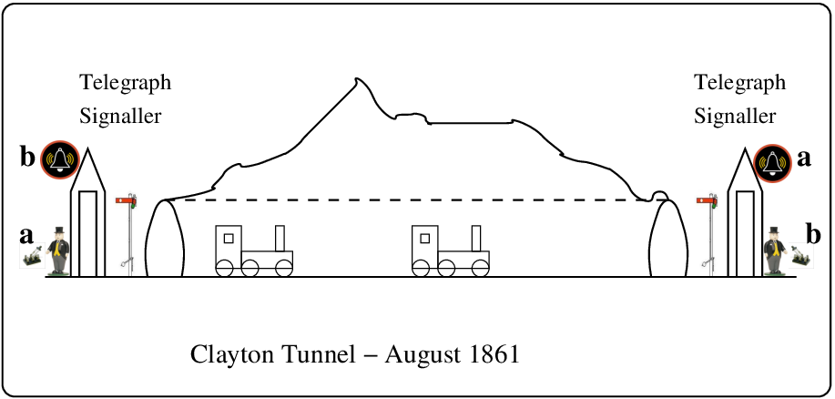
Signallers, flags, bells, train drivers, trains, ... and a tunnel.
The Clayton tunnel disaster. 21 years of faultless operation of a bad protocol.
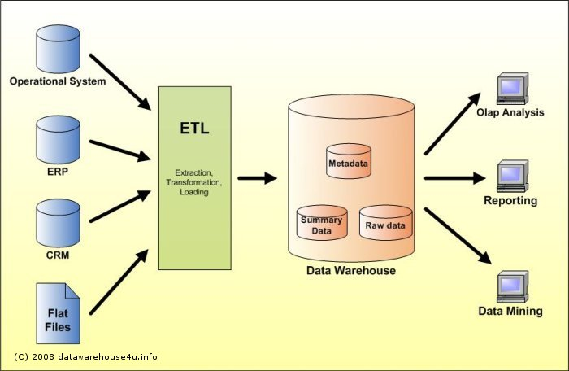 |
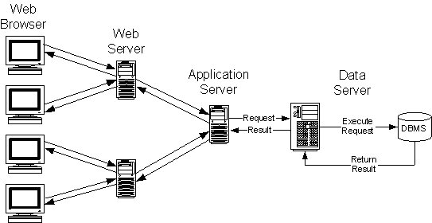 |
In these systems, there are relatively simple heirarchical structures with clear(ish) interfaces between them. In practice, things are rarely that simple.
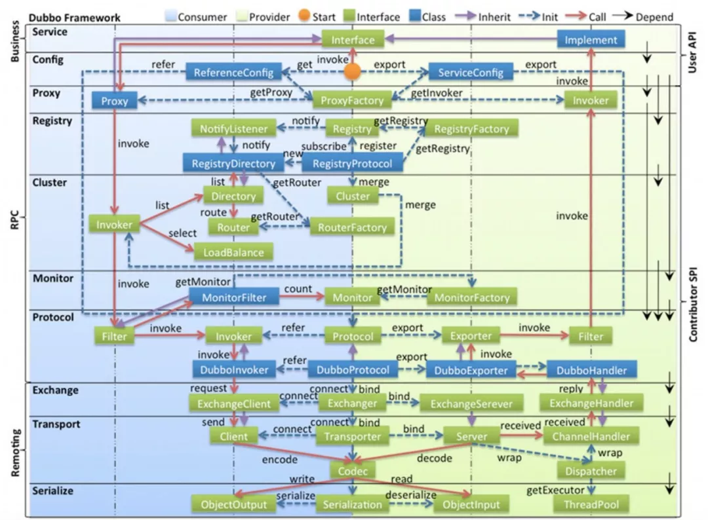 |
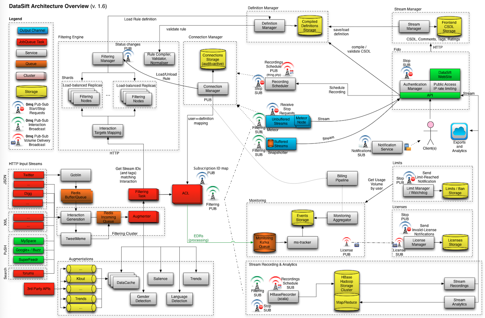 |
In these systems there are multiple software modules, perhaps spread over multiple platforms, with purpose-built interfaces between them. The likelihood of such complex systems being error-free is minimal. It is difficult to reason about even 3 interacting concurrent systems.
8 key points from paper summarized below:
.
KISS - keep it simple (stupid)
Why? Fewer errors, and checking correctness is easier.
Complex mechanisms make more assumptions, and it is hard to test for all these assumptions.
IPSEC: Can do almost everything to secure TCP/IP but it is complex, and implementations vary in behaviour, and sometimes are incompatible with other implementations.
Perhaps this is because it was designed by committee?
People switch to SSL VPNs which are much simpler, proven, compatible, robust...
Clients (subjects/processes) should minimize the amount of mechanism common to more than one user and depended on by all users.
Why? A common mechanism may provide a path of information leaks (Confinement/Covert storage channels). Common mechanisms must be trustworthy - what if a user found a way to corrupt or damage the shared mechanism, and as a result all users were affected? By default, clients should not share anything.
Microsoft NT architecture: FTP and Web services on the same computer shared a common thread pool.
Exhausting the FTP thread pool will cause failed connection requests for the Web service.
We can infer from the design principles a sensible set of rules to apply to software design and development. For example, we might have:
The NSA created various documents
describing the criteria for evaluating the security behaviour of
machines. These criteria were published in a series of documents with
brightly coloured covers, and hence the name Rainbow Documents.
|
The DOD 5200.28-STD - “Department of Defense Trusted Computer System Evaluation Criteria ” at [i8] above, provides a standard to manufacturers (for security features related to confidentiality), to provide DoD components with a metric with which to evaluate the degree of trust, and to provide a basis for specifying security requirements in acquisition specifications.
- For same-level security access. Not currently used.
- Controlled access protection - users are individually accountable for their actions.
- Mandatory BLP policies - for more secure systems handling classified data.
- structured protection - mandatory access control for all objects in the system. Formal models.
- security domains - more controls, minimal complexity, provable consistency of model.
- Verified design - consistency proofs between model and specification.
There are various levels of evaluation: E0..E6, with E6 giving the highest level of assurance - it requires two independant formal verifications.
The first E6 certification of a smart-card system was in 1998, for smart-cards used as electronic purses - that is they carry value, and forgery must be impossible.
The certification encompassed the communication with the card, as well as the software within the card, and at the bank.
Definition: a range of formal policies/methods for specifying the security of a system in terms of a (mathematical) model.
The confinement problem is one of preventing a system from leaking (possibly partial) information.
Sometimes a system can have an unexpected path of transmission of data, termed a covert channel, and through the use of this covert channel information may be leaked either by a malicious program, or by accident.
We categorize covert channels into two:
We can attempt to identify covert channels by building a shared resource matrix, determining which processes can read and write which resources.
An unscrupulous program could modify access permissions on a file to transmit a low data-rate message to another program.
By tabulating the types of data in a system, and the properties of the operations (read, write, execute, transitive), it may be possible to specify that the system cannot leak information or be used to transfer information.
For confidentiality it is OK for data to go from low to high security levels. However, communication protocols (TCP/IP etc) include ACK messages (from high to low) to acknowledge reception of data. A malicious participant at the high level could have a covert channel by altering the timing of the ACKs.
To prevent this, the NRL network pump is the router between the high and low levels, and buffers the packets, sending ACKs back to the low level. The ACKS vary in time randomly (although related to a moving average of previous overall activity).
Military style model to assure confidentiality services.
Security levels are in a (total) ordering formalizing a policy which restricts information flow from a higher security level to a lower security level.
where T>S>C>U. Access operations visualized using an access
control matrix, and are drawn from {read, write}.
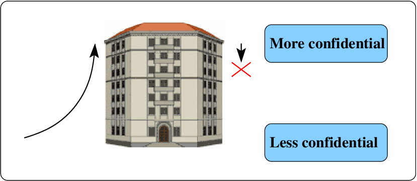
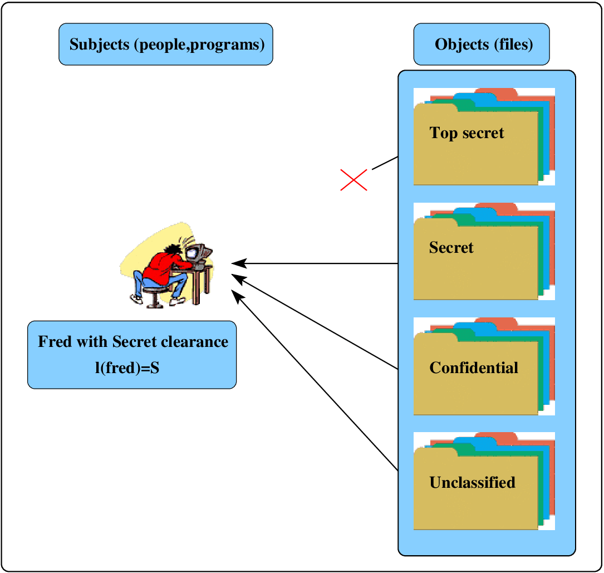
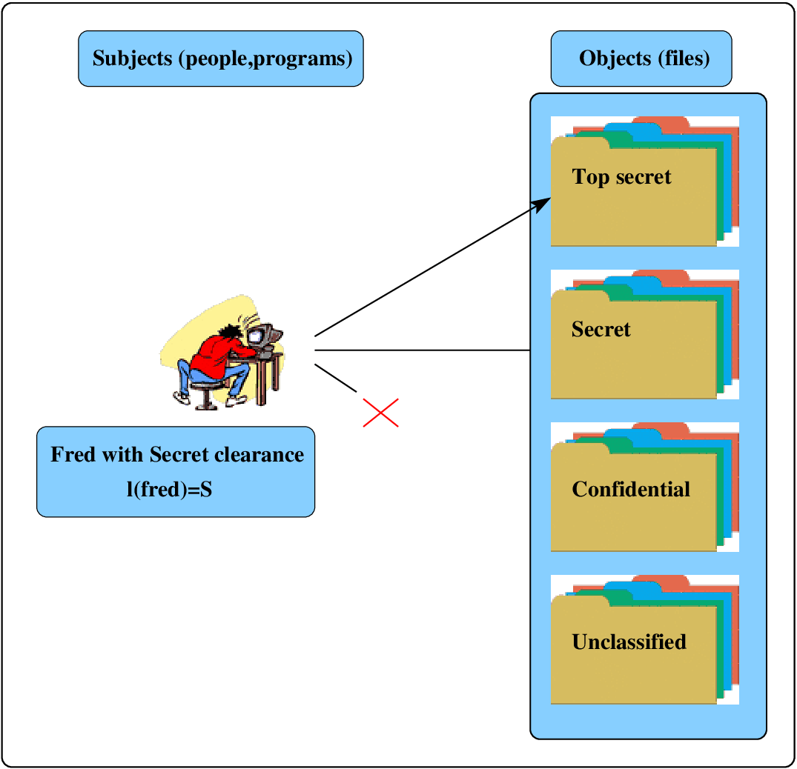
Our security policy for confidentiality is that we do not want items to be leaked (downwards). The rules are:
No
read-up-1: s can read o if and only if l_{o}\leq
l_{s}.
No
write-down-1: s can write o if and only if l_{s}\leq
l_{o}.
Note that Bell and LaPadula turned Military confidentiality processes into simple mathematics, which is much more compact that text descriptions, and allows for further analysis.
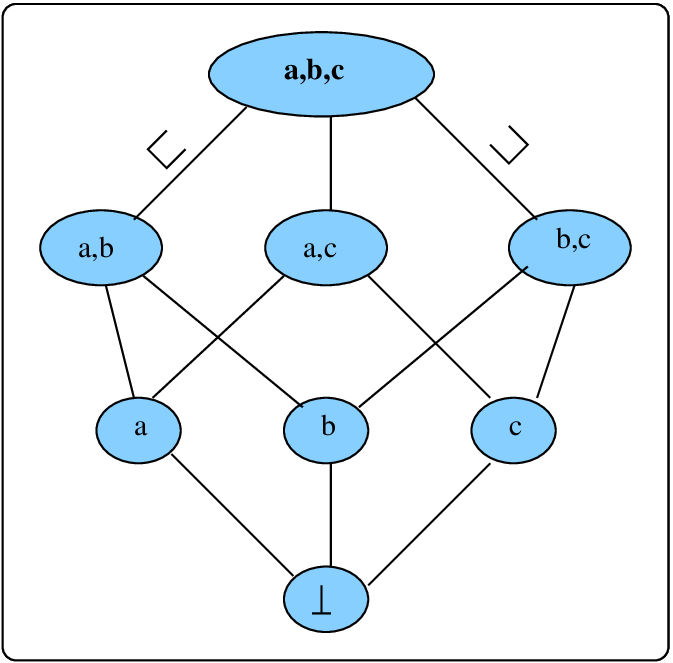 |
plus 0cm A security category c\in{\cal C} is used to classify objects in the model, with any object belonging to a set of categories. l is a level, as in the simple BLP on the previous slide. c is a category. Each pair (l\times c) is termed a security level, and forms a lattice.
|
A security level (l,c) dominates (l',c') (written (l,c)\text{ dom }(l',c')) if l'\leq l, and c'\subseteq c.
The new properties are:
No
read-up: s can read o if and
only if s\text{ dom }o.
No
write-down: s can write o if and
only if o\text{ dom }s.
Discretionary: s can
read/write o if and
only if no-read-up, no-write-down, and access permitted by discretionary policy.
A system is considered secure in the current state if all the current accesses are permitted by the properties.
A transition from one state to the next is considered secure if it goes from one secure state to another secure state.
The basic security theorem states that if the initial state of a system is secure, and if all state transitions are secure, then the system will always be secure.
BLP is a static model, not providing techniques for changing access rights or security levels2.
However the model does demonstrate initial ideas into how to model, and how to build security systems that are provably secure.
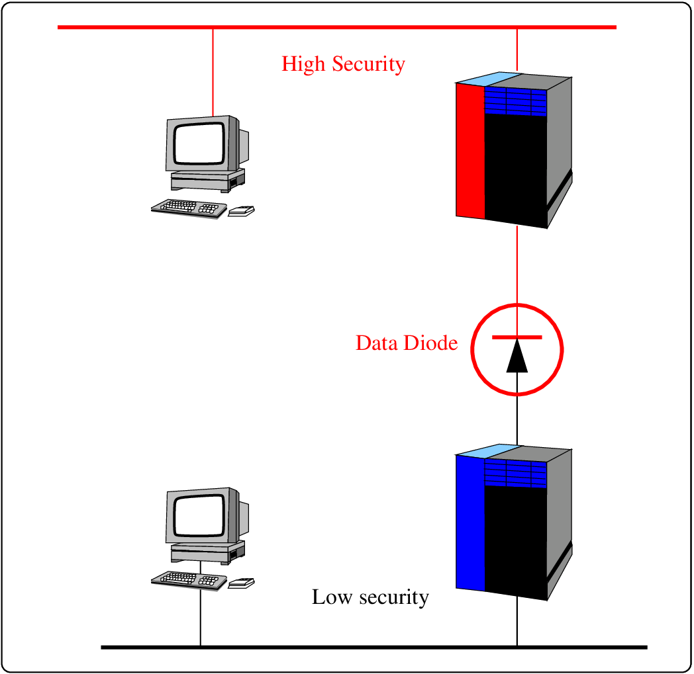
The term “data diode” is used for a special purpose router device, which sits between (say) a high security network, and a lower security network. It endeavours to only allow transmission of information from low to high. Such systems are used in the military and high-security organisations.
Biba model is concerned with the Trustworthiness of data and programs - assurance for integrity services.
It uses levels like clean
or dirty (in reference, say,
to database entries).
Biba model is a kind of dual for Bell-LaPadula. integrity vs confidentiality.
No
read-down: s can read
o iff
i(s)\leq i(o).
No
write-up: s can write
o iff
i(o)\leq i(s).
No
invoke-up: s_{1} can execute
s_{2} iff i(s_{2})\leq
i(s_{1}).
Biba models can have dynamic integrity levels, where the level of a subject reduces if it accesses an object at a lower level (i.e. it got dirty).
No
write-up and No invoke-up: (as before).
Subject
lowers: if s reads o then i'(s)=\text{min}(i(s),i(o)).
No
write-up and No invoke-up: (as before).
All
read: s can read o
regardless.
Subjects cannot work for their client’s competitors. We can write this in a similar fashion to the BLP model, using the notation y(c) for c’s company, and x(c) for c’s competitiors.
SimpleProperty: s can access c if and only if for all c'
that
s can
read, either y(c)\not\in x(c') or y(c)=y(c').
*-Property: s can write c only if s cannot
read any c' with x(c')\not=\emptyset and y(c)\not=y(c').
Formal methods involve the use of mathematically based techniques for the specification, development and verification of software and hardware systems3. Formal methods typically use some assortment of “computer science” fundamentals - process calculi, automata theory...
Formal specifications precisely describe a system to be developed and it’s properties.
The verification of a system involves proving or disproving the correctness of a system with respect to the formal specification or property.
Model checking is one well established approach to verification.
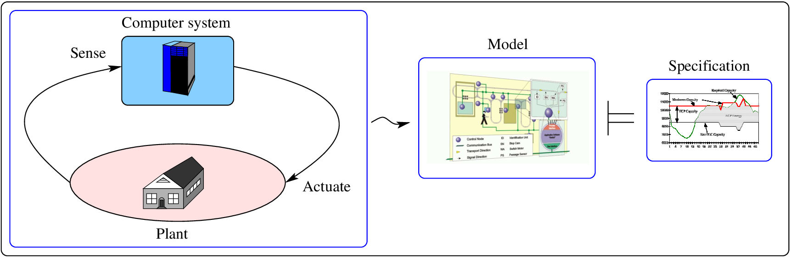
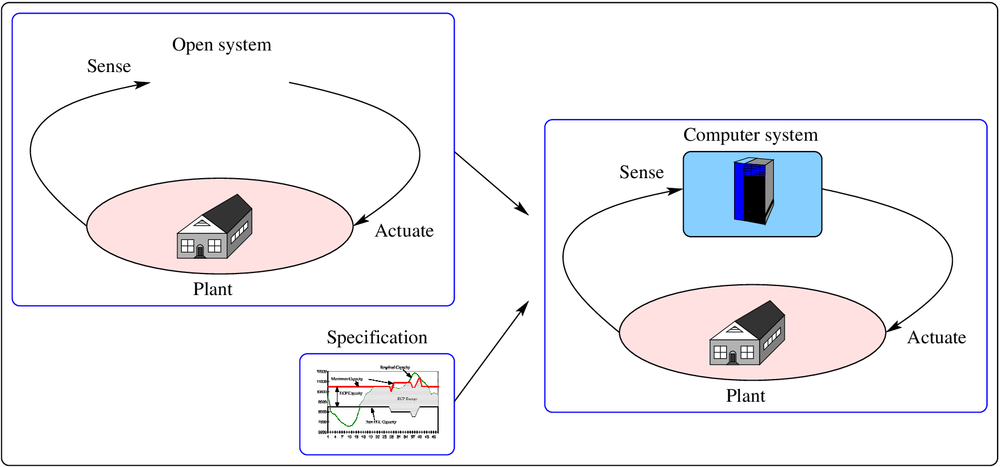
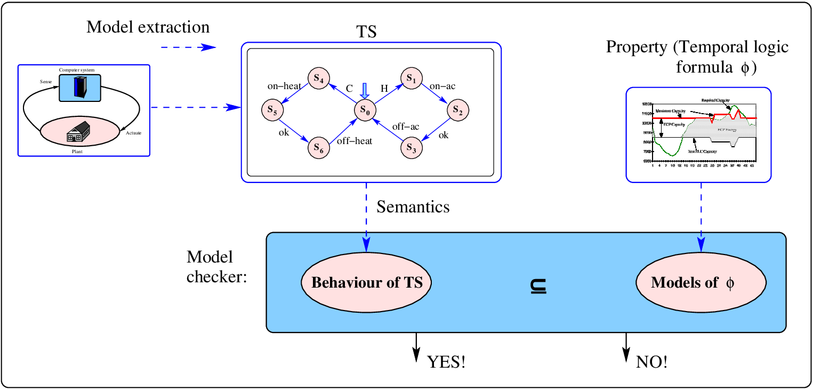
\mathrm{TS} represents the behaviour of the system, expressed as the allowable set of traces (or computations) of the system.
A model-checker checks if this behaviour of the system is a subset of the set of traces induced by an arbitrary property \phi, returning YES or NO.
When the model checker returns NO, it provides a counter-example - a trace leading to the error.
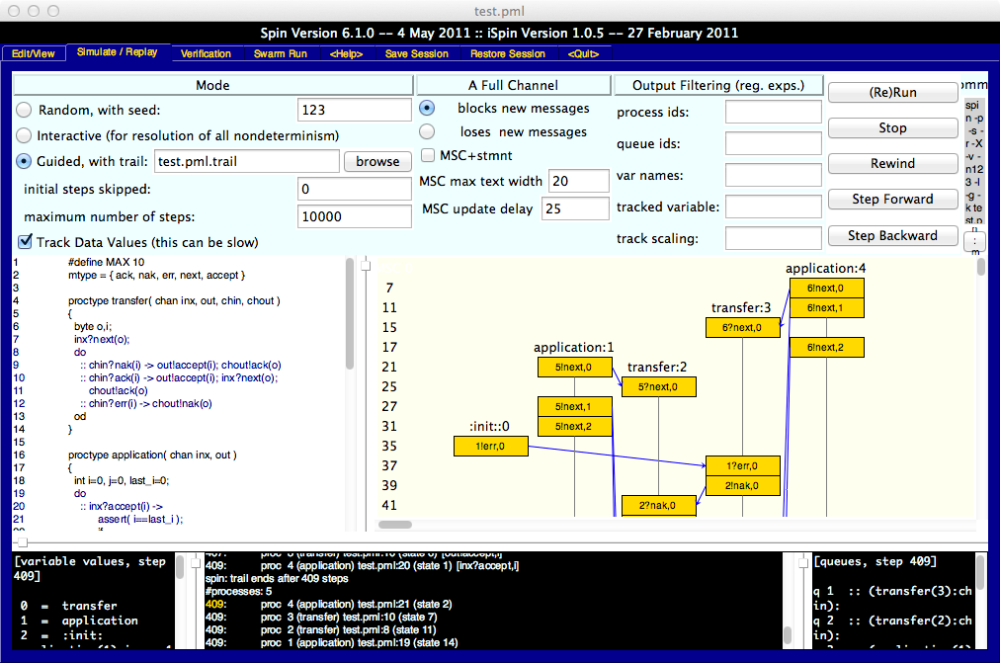
Spin is the checker for Promela models. It allows you to make assertions about the model: assert(some_boolean_condition);
The language Promela is ’C’ like, with an initialization procedure. It can model asynchronous or synchronous, deterministic or non-deterministic systems.
It supports model checking with both safety and liveness assertions. What this means, is that in addition to boolean assertions scattered throughout the model, we can make time/temporal based assertions/claims.
We got here again without making any progress!
The support for temporal claims takes the form of:
mtype = {ack,nak,err,next,accept}
init
{
chan AtoB = [1] of { mtype,byte };
chan BtoA = [1] of { mtype,byte };
chan Ain = [2] of { mtype,byte };
chan Bin = [2] of { mtype,byte };
chan Aout = [2] of { mtype,byte };
chan Bout = [2] of { mtype,byte };
atomic {
run application( Ain,Aout );
run xfer( Aout,Ain,BtoA,AtoB );
run xfer( Bout,Bin,AtoB,BtoA );
run application( Bin,Bout )
};
AtoB!err(0)
}| 4 processes, 6 channels... | The “mainline” | ||
|---|---|---|---|
| 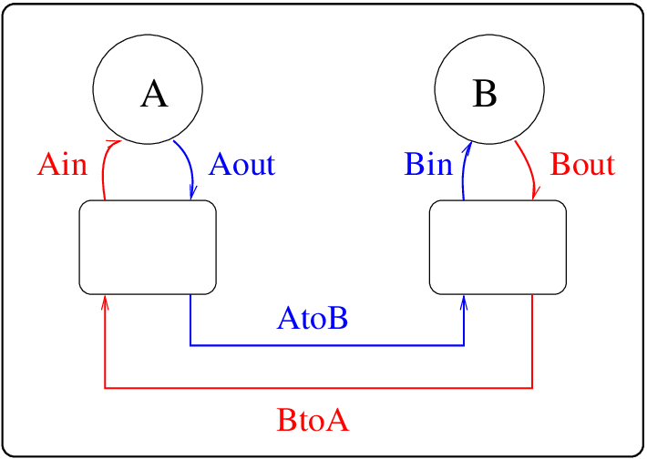 |
|
This is Lynch’s protocol - with two applications sending data continuously to each other. Lynch’s protocol was described in detail, used for many years, but had a flaw. It could get into a state where it would no longer send data one way.
| Transfer/protocol rules | An application for testing |
|---|---|
|
|
The assertion tests if the last message had a correct number, and is always OK. But one of the applications can make no progress. Formal methods catch these hard-to-find errors.
#define idle 0;
#define wait 1;
#define run 2;
var L=idle;
var H=idle;
var M=idle;
var mutex=true;
GetMutex() = [mutex]aquire{mutex=false;} -> Skip();
FreeMutex() = [!mutex]release{mutex=true;} -> Skip();
HiPri() = getHP{H=wait;M=idle;} -> GetMutex();
runHP -> DoHigh();
DoHigh() = endHP{H=run;} -> FreeMutex();
idleHP{H=idle;} -> HiPri();
MedPri() = [H!=run]runMP{M=run;} -> MedPri();
LowPri() = [H==idle&&M==idle]getLP{L=wait;} -> GetMutex();
[H==idle&&M==idle]runLP -> DoLow();
DoLow() = [H==idle&&M==idle]endLP{L=run;} -> FreeMutex();
[H==idle&&M==idle]idleLP{L=idle;} -> LowPri();
AllTasks() = HiPri() ||| MedPri() ||| LowPri();
#assert AllTasks() deadlockfree;
#assert AllTasks() |= [](getHP -> <>endHP); | 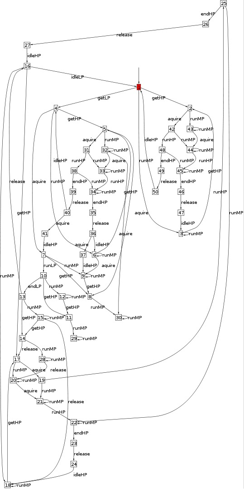 |
|
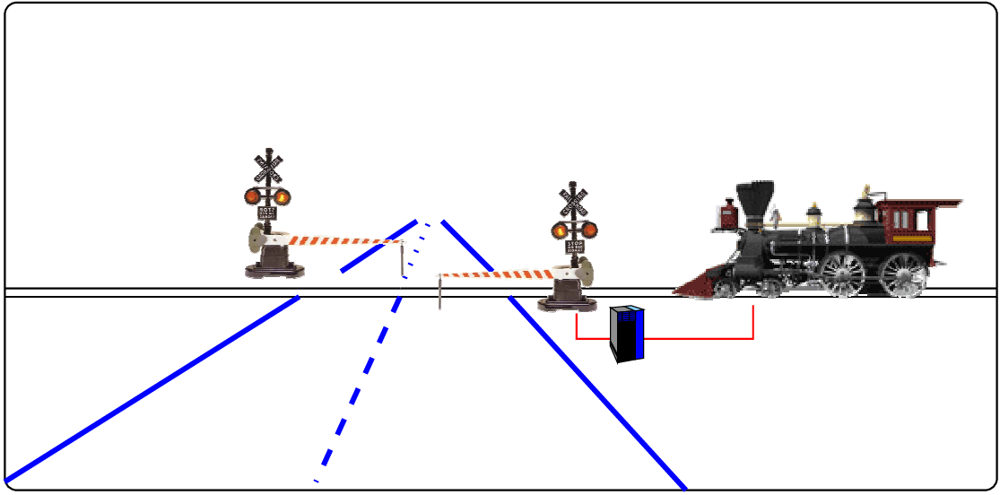
In this system, we have multiple interacting components. The controller attempts to open and close the gate based on the train’s activities, and the gate’s status.
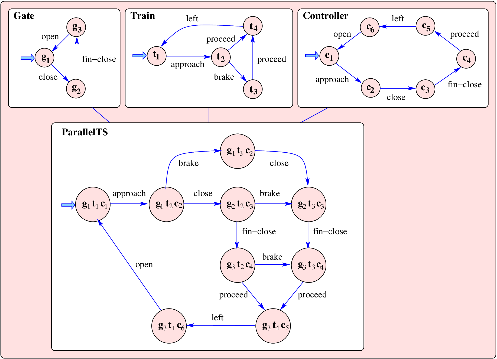
We can easily model each of the components, and can imagine an algorithm to construct the parallel composition of them.This model can be analysed with tools.
Examples - Complex systems are everywhere, and a lot of software is produced without much thought for complexity. Programmers and software designers should adopt better engineering approaches.
Architectures - There are standard design patterns in software that should be adopted. Dont re-invent the wheel.
Standards and formal methods - Hugh emphasized that mathematically-based tools can be used for developing better software, giving more assurance of the outcome.